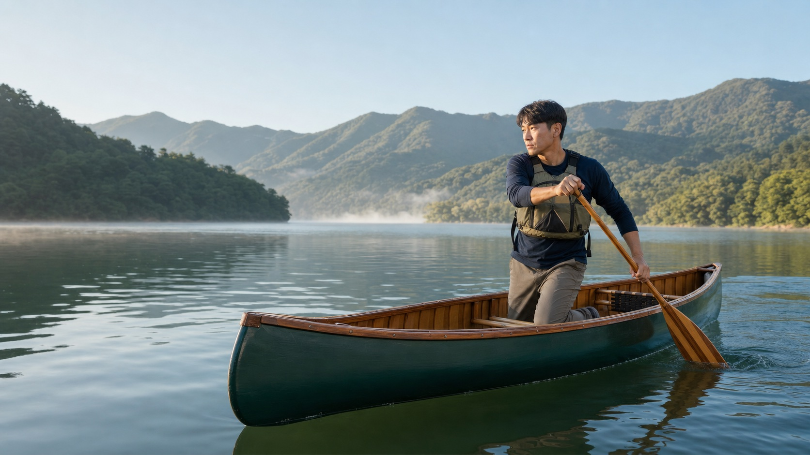

기술 이름보다 블레이드를 어디에 심고, 어느 방향으로 힘을 만들며, 저항 없이 어떻게 회수하는지를 먼저 확인하세요. 영상은 영어이지만 동작 관찰이 쉽도록 기술별로 묶었습니다.
일치하는 기술이 없습니다.
급류·강풍 환경에서 카누 기울이기, 더펙, 브레이스를 연습하면 전복이나 어깨 부상으로 이어질 수 있습니다. 구명조끼를 착용하고 구조 가능한 동료 및 검증된 강사와 함께 연습하세요.
카누 스트로크를 원리부터 응용까지

기술 이름보다 블레이드를 어디에 심고, 어느 방향으로 힘을 만들며, 저항 없이 어떻게 회수하는지를 먼저 확인하세요. 영상은 영어이지만 동작 관찰이 쉽도록 기술별로 묶었습니다.